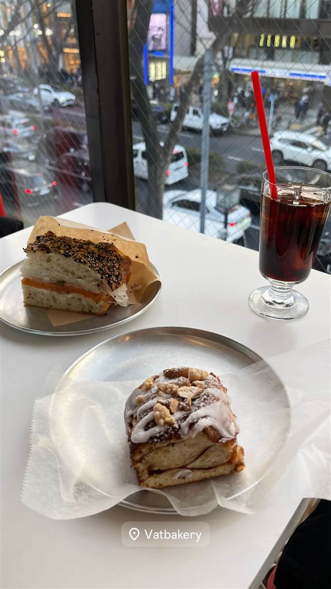

VAT BAKERY
伝説の喫茶店『エース』の家具を配したノスタルジックな空間で焼きたてパン
Vatbakery
WHY GO
神田の閉店喫茶エースの家具を配しのりトーストを継承する空間
2024年12月、表参道の伝説的カフェ『モントーク』跡地に誕生したコンセプトストア『V.A.』内のベーカリー。藤原ヒロシが空間を手がけ、神田の老舗喫茶店『エース』の家具を配したノスタルジックな空間で焼きたてパンを楽しめる。
TRIVIA
豆知識
- 店の場所は表参道で20年愛された伝説のカフェ『モントーク』の跡地
- 店内の家具は神田にあった老舗喫茶店『エース』から譲り受けたもの
- 空間ディレクションはスタイリストの藤原ヒロシが担当
REVIEWS
世間の評判
3.38食べログ
のりトーストとレトロな内装の評判
- 神田の閉店喫茶から継承したのりトーストをわざわざ目当てに来る人が多い
- 美術館のようなレトロな内装と窓際からの表参道の眺めを評価する声が多い
- 味についてはシンプルすぎて期待したほどではないと感じる人もいる
食べログ 口コミ132件
| 創業 | 2024年12月15日オープン |
|---|---|
| 系譜 | アパレル大手ジュンが手がけるコンセプトストア「V.A.」内のベーカリー。表参道の伝説的カフェ『モントーク』跡地に誕生 |
| 看板 | 焼きたてパン、シナモンロール、ドーナツ |
| こだわり | 神田の老舗喫茶店『エース』から譲り受けた家具を店内に配し、ノスタルジックな空間を演出 |
| どこから | 都心 |
| 営業時間 | 月〜日 10:00-20:00 |
| 予算 | 昼 ¥1,000～¥1,999 夜 ¥1,000～¥1,999 |
| 場所 | 明治神宮前 東京都渋谷区神宮前6-1-9 |
| メモ | 1F物販、2Fベーカリー、3Fカフェの複合フロア構成 |
食べたもの：パンとコーヒー
NEARBY
近い店・同じ系統の店
-
 ★
まぜそば・油そば 明治神宮前
バサノバ 原宿店（BASSANOVA）
元祖原宿ラーメンを名乗り自家製グリーンカレーペーストで作るエスニックラーメン
昼 ¥1,000～¥1,999 夜 ¥2,000～¥2,999
★
まぜそば・油そば 明治神宮前
バサノバ 原宿店（BASSANOVA）
元祖原宿ラーメンを名乗り自家製グリーンカレーペーストで作るエスニックラーメン
昼 ¥1,000～¥1,999 夜 ¥2,000～¥2,999
-
 ピザ 明治神宮前駅
ピッツァ ケベロス 明治神宮前店 (PIZZA KEVELOS)
美大卒でSAVOY仕込みの店主が焼くナポリピッツァ
昼 ¥2,000～¥2,999 夜 ¥3,000～¥3,999
ピザ 明治神宮前駅
ピッツァ ケベロス 明治神宮前店 (PIZZA KEVELOS)
美大卒でSAVOY仕込みの店主が焼くナポリピッツァ
昼 ¥2,000～¥2,999 夜 ¥3,000～¥3,999
-
 ピザ 明治神宮前
PIZZERIA CANTERA
食べログピザ百名店、全粒粉100%のナポリピッツァ
昼 ¥1,000～¥1,999 夜 ¥4,000～¥4,999
ピザ 明治神宮前
PIZZERIA CANTERA
食べログピザ百名店、全粒粉100%のナポリピッツァ
昼 ¥1,000～¥1,999 夜 ¥4,000～¥4,999
-
 メキシコ 北参道
FONDA DE LA MADRUGADA（フォンダ・デ・ラ・マドゥルガーダ）
内装をメキシコから輸入し、夕方以降はマリアッチが店内を回り生演奏する
昼 ¥3,000～¥3,999 夜 ¥6,000～¥7,999
メキシコ 北参道
FONDA DE LA MADRUGADA（フォンダ・デ・ラ・マドゥルガーダ）
内装をメキシコから輸入し、夕方以降はマリアッチが店内を回り生演奏する
昼 ¥3,000～¥3,999 夜 ¥6,000～¥7,999
-
 ドリンク 原宿駅／渋谷駅
伊良コーラ 渋谷店
祖父の漢方薬局の資料と幻のコーラ原レシピを組み合わせ生んだ元祖クラフトコーラ
昼 ～¥999 夜 ～¥999
ドリンク 原宿駅／渋谷駅
伊良コーラ 渋谷店
祖父の漢方薬局の資料と幻のコーラ原レシピを組み合わせ生んだ元祖クラフトコーラ
昼 ～¥999 夜 ～¥999
-
 ドリンク 原宿（竹下口）
pss‐protein supply stand‐ 原宿店
真空ミキサーで空気を抜き酸化を防ぐ国内唯一のプロテインスムージー専門店
昼 ¥1,000未満 夜 ¥1,000未満
ドリンク 原宿（竹下口）
pss‐protein supply stand‐ 原宿店
真空ミキサーで空気を抜き酸化を防ぐ国内唯一のプロテインスムージー専門店
昼 ¥1,000未満 夜 ¥1,000未満